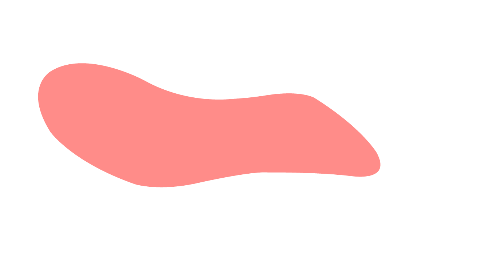

Bonjour, je suis Candice Brigaud, étudiante en webdesign à l’école Futurae. Je maîtrise tous les logiciels nécessaires au métier de webdesigner. Je suis également formée au design print. L’ensemble des projets que je vous présente ici, sont un extrait de mon portfolio. Ils sont le fruit de mon apprentissage académique mais également de la somme des expériences artistiques que j’ai pu mener, exposition, prise de vue, dressage culinaire.
La charte graphique Anina s’inscrit dans un projet étudiant de création d’une marque pour une couturière qui souhaite lancer son activité, de la dénomination jusqu’a l’univers graphique.